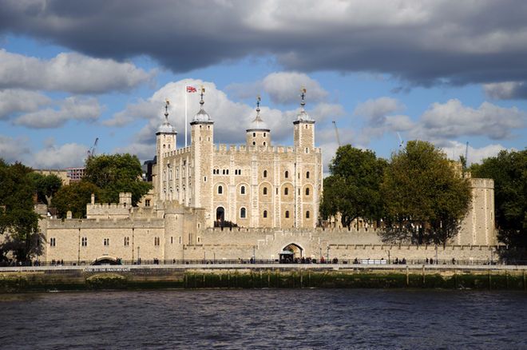
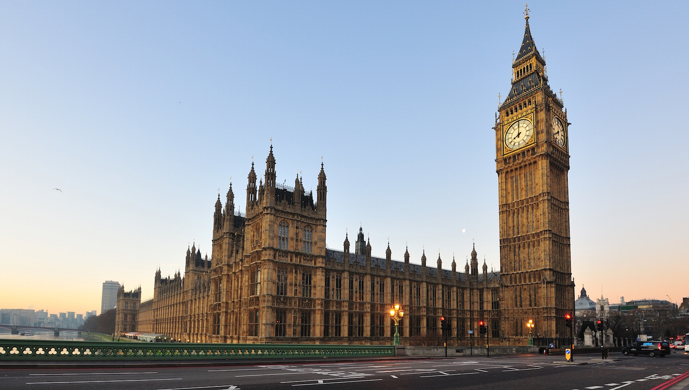
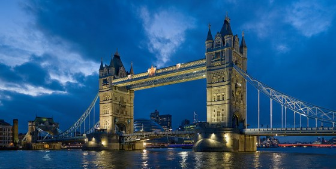

Tower Of London
The tower of london is a castle located in the central of london that use to hold many prisoners
and also crown jewels.
Big Ben
Big ben stands about 96 metres and has 334 steps to climb if you want to get to the belfry and
399 steps to get to the very top.
Tower Bridge
The tower bridge has been standing for around 120 years and people use to be able to walk
across the bridge but soon after it was closed do to not many people used to cross.